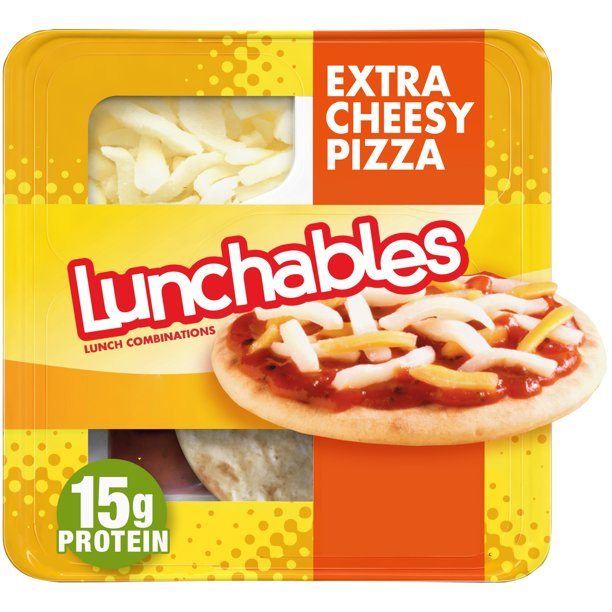

Lunchables

Description
Lunchables are fascinating snacks that unlocks a nostalgic memory for many of us. It harkens back to simplier times where the hardest choices in life were just which lunchables to choose from and beg your parents to buy. The classic choice was always the extra cheesy pizza because who doesn't enjoy making your own personal pizza as child? It wasn't neccessarily about the taste, it was the fact that I made it and it was mine to eat.
Ingredients
- Circular Pizza Dough
- Pizza Sauce Packet
- Cheese
Steps
- Buy an Extra Cheesy Pizza Lunchables at your local grocery store
- Open the lunchables and take out the sauce pack and rip it open just so a small opening in the middle appears. Make sure not to rip too much!
- Carefully take one of the circular doughs and squeeze enough sauce on the dough so that it covers a good chuck of area and you have sauce left for the other circular dough pieces.
- Pinch a couple drops of cheese from the cheese pocket on top of the sauce so that it sticks to the sauce. Similar to the previous step, make sure you leave enough cheese for the other circular dough pieces.
- Your pizza is done, eat and enjoy!
- Repeat steps 1-5 for the remaining circular dough pieces.